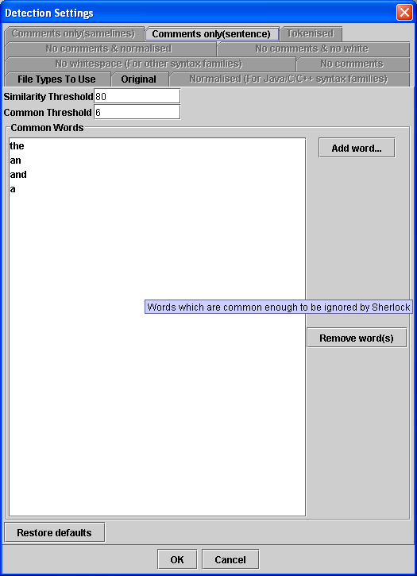

The way that Sherlock behaves when detecting plagiarism on natural language work can be altered in a veriety of ways. The detection settings dialog box allows you to alter settings which affect the amount and accuracy of results from the plagiarism detection phase.
Detection Settings

The first setting here is the "Similarity Threshold". To understand the effect of this setting you must also understand how Sherlock assigns scores to sentences.
When one sentence is compared to another, a score is assigned based on how
similar they are. If you have sentence A, with 8 words, Sentence B, with 10
words and they have 8 words in common then the score is assigned by calculating
what the average percentage of words in common is between the two sentences
(ie. ((8/8 + 8/10)/2) ). In this case the score is 90.
Scores which are lower than the Similarity Threshold will be discarded by Sherlock and will not be available when calculating total scores for a document. Therefore, setting this number lower will include more links but these will be less certain of being plagiarism and they will slow the program down during its calculations.
The second setting is the "Common Threshold". When Sherlock compares sentences the similarity link will be stored regardless of the score if the number of words the two sentences have in common is above this threshold.
Setting this value higher will result in less links but it may cause Sherlock to miss similarities between sentences which are greatly different in length. In other words, if a student plagiarises an essay but merges short sentences into longer sentences or vice-versa then Sherlock will miss the similarity when the Common Threshold is high.
The final setting here is the "Common Words" list. Any word on this list will not be used when comparing sentences. So, in the sentence, "The cat was blue," only the words "cat," "was," and "blue" would be compared to the words in other sentences by default. If you wish to change this setting then it must be changed before the parsing phase or it will have no effect.
In general, only change the default settings if you feel unsatisfied with the results produced by them. An extensive testing process has taken place to choose good 'all-round' settings and changing these can sometimes produce unpredictable results that will either miss a lot of the plagiarism or contain thousands of weak similarities which are of no use to the marker.